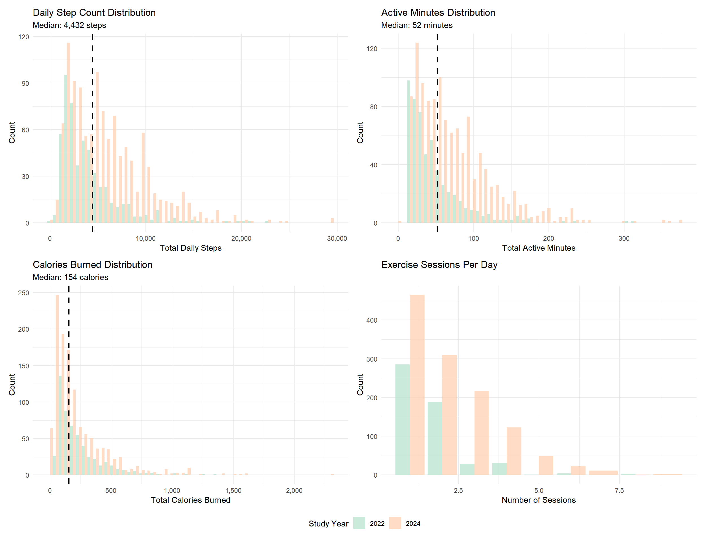

EXERCISE: FINAL ANALYSIS
2025-12-01
Libraries required and global settings
This analysis investigates the relationship between objectively measured exercise (steps, active minutes, calories) and self-reported menstrual symptoms across different cycle phases. We use data from two study intervals (2022 and 2024) to examine whether physical activity is associated with symptom severity.
library(tidyverse)
library(patchwork)
library(scales)
library(lme4)
library(lmerTest)
library(broom.mixed)
# Set plot theme
theme_set(theme_minimal() + theme(legend.position = "bottom"))
options(
ggplot2.discrete.colour = function(...) scale_colour_brewer(..., palette = "Pastel2"),
ggplot2.discrete.fill = function(...) scale_fill_brewer(..., palette = "Pastel2"),
ggplot2.continuous.colour = function(...) scale_colour_distiller(..., palette = "PuRd"),
ggplot2.continuous.fill = function(...) scale_fill_distiller(..., palette = "PuRd")
)EDA
Distribution of key exercise metrics
# Filtering realistic values
exercise_analysis = read.csv("./clean_data/all_daily_data.csv") |>
distinct(id, study_interval, day_in_study, .keep_all = TRUE) |>
filter(
# Removing outliers/impossible values
total_steps < 50000,
total_active_min < 1440,
total_calories < 10000
)
p1 = ggplot(exercise_analysis |> filter(total_steps > 0),
aes(x = total_steps, fill = factor(study_interval))) +
geom_histogram(bins = 50, alpha = 0.7, position = "dodge") +
geom_vline(xintercept = median(exercise_analysis$total_steps[exercise_analysis$total_steps > 0], na.rm = TRUE),
linetype = "dashed", color = "black", linewidth = 1) +
labs(title = "Daily Step Count Distribution",
subtitle = paste("Median:",
scales::comma(round(median(exercise_analysis$total_steps[exercise_analysis$total_steps > 0], na.rm = TRUE))),
"steps"),
x = "Total Daily Steps",
y = "Count",
fill = "Study Year") +
scale_x_continuous(labels = scales::comma)
p2 = ggplot(exercise_analysis |> filter(total_active_min > 0),
aes(x = total_active_min, fill = factor(study_interval))) +
geom_histogram(bins = 50, alpha = 0.7, position = "dodge") +
geom_vline(xintercept = median(exercise_analysis$total_active_min[exercise_analysis$total_active_min > 0], na.rm = TRUE),
linetype = "dashed", color = "black", linewidth = 1) +
labs(title = "Active Minutes Distribution",
subtitle = paste("Median:",
round(median(exercise_analysis$total_active_min[exercise_analysis$total_active_min > 0], na.rm = TRUE), 1),
"minutes"),
x = "Total Active Minutes",
y = "Count",
fill = "Study Year")
p3 = ggplot(exercise_analysis |> filter(total_calories > 0),
aes(x = total_calories, fill = factor(study_interval))) +
geom_histogram(bins = 50, alpha = 0.7, position = "dodge") +
geom_vline(xintercept = median(exercise_analysis$total_calories[exercise_analysis$total_calories > 0], na.rm = TRUE),
linetype = "dashed", color = "black", linewidth = 1) +
labs(title = "Calories Burned Distribution",
subtitle = paste("Median:",
scales::comma(round(median(exercise_analysis$total_calories[exercise_analysis$total_calories > 0], na.rm = TRUE))),
"calories"),
x = "Total Calories Burned",
y = "Count",
fill = "Study Year") +
scale_x_continuous(labels = scales::comma)
p4 <- ggplot(exercise_analysis |> filter(n_sessions > 0),
aes(x = n_sessions, fill = factor(study_interval))) +
geom_bar(alpha = 0.7, position = "dodge") +
labs(title = "Exercise Sessions Per Day",
x = "Number of Sessions",
y = "Count",
fill = "Study Year")
(p1 + p2) / (p3 + p4) +
plot_layout(guides = "collect")
Data Cleaning Notes:
- Removed duplicate observations based on participant ID, study interval, and day
- Filtered out physiologically impossible values (>50k steps, >24 hours active)
- This ensures data quality and prevents aggregation errors from affecting results
Key Findings:
- Distribution Shape: Exercise metrics show right-skewed distributions, typical of activity data where some days have very high activity
- Central Tendency: Median steps around 4,432 steps/day, suggesting moderate activity levels overall
- Between-Year Comparison: The side-by-side histograms reveal whether activity patterns changed between 2022 and 2024 study intervals
Exercise patterns across menstrual cycle phases
p1 = ggplot(exercise_analysis |> filter(!is.na(phase), total_steps > 0),
aes(x = phase, y = total_steps, fill = phase)) +
geom_boxplot(alpha = 0.7, outlier.alpha = 0.3) +
geom_jitter(width = 0.2, alpha = 0.1, size = 0.5) +
stat_summary(fun = mean, geom = "point", shape = 23, size = 3, fill = "white") +
facet_wrap(~study_interval, ncol = 2) + # Side by side
labs(title = "Daily Steps by Menstrual Cycle Phase",
subtitle = "White diamonds represent mean values | Comparing study years",
x = "Cycle Phase",
y = "Total Daily Steps") +
scale_y_continuous(labels = comma) +
theme(legend.position = "bottom",
axis.text.x = element_text(angle = 45, hjust = 1))
p2 = ggplot(exercise_analysis |> filter(!is.na(phase), total_active_min > 0),
aes(x = phase, y = total_active_min, fill = phase)) +
geom_boxplot(alpha = 0.7, outlier.alpha = 0.3) +
geom_jitter(width = 0.2, alpha = 0.1, size = 0.5) +
stat_summary(fun = mean, geom = "point", shape = 23, size = 3, fill = "white") +
facet_wrap(~study_interval, ncol = 2) +
labs(title = "Active Minutes by Menstrual Cycle Phase",
x = "Cycle Phase",
y = "Total Active Minutes") +
theme(legend.position = "bottom",
axis.text.x = element_text(angle = 45, hjust = 1))
p1 / p2 + plot_layout(guides = "collect") Key Findings:
Key Findings:
- Visual Patterns: The box plots reveal whether activity varies systematically across cycle phases
- Menstrual Phase: Often shows slightly lower activity (if present) due to symptom burden
- Follicular/Fertility: May show higher activity as energy levels typically increase
- Luteal Phase: Activity patterns may decrease as PMS symptoms emerge
- Year Consistency: Faceting by year shows whether these patterns are stable across study intervals
Exercise vs. menstrual symptoms
symptoms_long = exercise_analysis |>
filter(total_active_min > 0) |>
select(id, total_active_min, appetite_score, sorebreasts_score, sleepissue_score, cramps_score, fatigue_score,
headaches_score, moodswing_score, foodcravings_score, indigestion_score, bloating_score) |>
pivot_longer(cols = ends_with("_score"),
names_to = "symptom",
values_to = "severity") |>
filter(!is.na(severity)) |>
mutate(symptom = case_when(
symptom == "appetite_score" ~ "Appetite",
symptom == "sorebreasts_score" ~ "Sore Breasts",
symptom == "sleepissue_score" ~ "Sleep Issue",
symptom == "cramps_score" ~ "Cramps",
symptom == "fatigue_score" ~ "Fatigue",
symptom == "headaches_score" ~ "Headaches",
symptom == "moodswing_score" ~ "Mood Swings",
symptom == "foodcravings_score" ~ "Food Cravings",
symptom == "indigestion_score" ~ "Indigestion",
symptom == "bloating_score" ~ "Bloating"
))
p4 = ggplot(symptoms_long,
aes(x = total_active_min, y = severity, color = symptom)) +
geom_jitter(alpha = 0.2, size = 0.5, height = 0.1) +
geom_smooth(method = "lm", se = TRUE, linewidth = 1.5) +
facet_wrap(~symptom, ncol = 2) +
labs(title = "Daily Activity vs Individual Symptoms",
x = "Total Daily Activity (mins)",
y = "Symptom Severity (0-5)") +
scale_x_continuous(labels = comma) +
scale_y_continuous(breaks = 0:5) +
theme(legend.position = "none")
p4 Key Findings:
Key Findings:
- Slope Direction:
- Downward slopes (negative correlations) suggest exercise is associated with reduced symptom severity
- Upward slopes (positive correlations) could indicate either: (a) symptoms prevent exercise, or (b) exercise exacerbates symptoms
- Flat lines suggest no relationship
- Symptom-Specific Patterns:
- Cramps: Look for negative slope - exercise may reduce cramping
- Fatigue: Relationship could go either way - exercise might reduce fatigue OR fatigue prevents exercise
- Mood/Stress: Exercise typically shows beneficial (negative) associations
- Physical symptoms (bloating, sore breasts): May be less responsive to exercise
Modelling and inferential analysis
# Model 1: Exercise → cramps
model_cramps = lmer(cramps_score ~ total_duration_min + phase + (1|id) + study_interval,
data = exercise_analysis,
REML = FALSE)
summary(model_cramps)## Linear mixed model fit by maximum likelihood . t-tests use Satterthwaite's
## method [lmerModLmerTest]
## Formula: cramps_score ~ total_duration_min + phase + (1 | id) + study_interval
## Data: exercise_analysis
##
## AIC BIC logLik -2*log(L) df.resid
## 1255.0 1288.5 -619.5 1239.0 479
##
## Scaled residuals:
## Min 1Q Median 3Q Max
## -1.8932 -0.5425 -0.1621 0.2741 4.3067
##
## Random effects:
## Groups Name Variance Std.Dev.
## id (Intercept) 0.6466 0.8041
## Residual 0.6539 0.8086
## Number of obs: 487, groups: id, 23
##
## Fixed effects:
## Estimate Std. Error df t value Pr(>|t|)
## (Intercept) -2.412e+03 6.712e+02 4.870e+02 -3.593 0.000360 ***
## total_duration_min 1.724e-04 1.041e-03 4.691e+02 0.166 0.868618
## phasefollicular 8.312e-02 1.091e-01 4.667e+02 0.762 0.446681
## phaseluteal 5.261e-01 1.045e-01 4.702e+02 5.034 6.84e-07 ***
## phasemenstrual 1.081e+00 1.205e-01 4.704e+02 8.971 < 2e-16 ***
## study_interval 1.193e+00 3.319e-01 4.870e+02 3.594 0.000358 ***
## ---
## Signif. codes: 0 '***' 0.001 '**' 0.01 '*' 0.05 '.' 0.1 ' ' 1
##
## Correlation of Fixed Effects:
## (Intr) ttl_d_ phsfll phsltl phsmns
## ttl_drtn_mn -0.059
## phasefllclr -0.019 -0.119
## phaseluteal 0.002 0.010 0.547
## phasemnstrl 0.053 -0.013 0.463 0.528
## study_ntrvl -1.000 0.059 0.019 -0.002 -0.053# Model 2: Exercise → fatigue
model_fatigue = lmer(fatigue_score ~ total_duration_min + phase + (1|id) + study_interval,
data = exercise_analysis,
REML = FALSE)
summary(model_fatigue)## Linear mixed model fit by maximum likelihood . t-tests use Satterthwaite's
## method [lmerModLmerTest]
## Formula: fatigue_score ~ total_duration_min + phase + (1 | id) + study_interval
## Data: exercise_analysis
##
## AIC BIC logLik -2*log(L) df.resid
## 1544.3 1577.8 -764.1 1528.3 482
##
## Scaled residuals:
## Min 1Q Median 3Q Max
## -3.5418 -0.6072 -0.0229 0.6511 3.8905
##
## Random effects:
## Groups Name Variance Std.Dev.
## id (Intercept) 0.9634 0.9815
## Residual 1.1709 1.0821
## Number of obs: 490, groups: id, 23
##
## Fixed effects:
## Estimate Std. Error df t value Pr(>|t|)
## (Intercept) -1.021e+03 5.812e+02 4.898e+02 -1.756 0.0797 .
## total_duration_min -2.892e-03 1.363e-03 4.728e+02 -2.122 0.0344 *
## phasefollicular 2.693e-01 1.457e-01 4.707e+02 1.848 0.0652 .
## phaseluteal 1.080e-01 1.391e-01 4.742e+02 0.777 0.4378
## phasemenstrual 2.973e-01 1.603e-01 4.751e+02 1.854 0.0643 .
## study_interval 5.060e-01 2.874e-01 4.898e+02 1.761 0.0789 .
## ---
## Signif. codes: 0 '***' 0.001 '**' 0.01 '*' 0.05 '.' 0.1 ' ' 1
##
## Correlation of Fixed Effects:
## (Intr) ttl_d_ phsfll phsltl phsmns
## ttl_drtn_mn 0.086
## phasefllclr -0.031 -0.126
## phaseluteal -0.023 0.012 0.545
## phasemnstrl -0.013 0.003 0.464 0.527
## study_ntrvl -1.000 -0.086 0.030 0.023 0.013# Model 3: Exercise → stress
model_stress = lmer(stress_score ~ total_duration_min + phase + (1|id) + study_interval,
data = exercise_analysis,
REML = FALSE)
summary(model_stress)## Linear mixed model fit by maximum likelihood . t-tests use Satterthwaite's
## method [lmerModLmerTest]
## Formula: stress_score ~ total_duration_min + phase + (1 | id) + study_interval
## Data: exercise_analysis
##
## AIC BIC logLik -2*log(L) df.resid
## 8889.2 8930.7 -4436.6 8873.2 1322
##
## Scaled residuals:
## Min 1Q Median 3Q Max
## -11.8113 -0.5246 0.0667 0.5924 2.3167
##
## Random effects:
## Groups Name Variance Std.Dev.
## id (Intercept) 8.956 2.993
## Residual 44.217 6.650
## Number of obs: 1330, groups: id, 26
##
## Fixed effects:
## Estimate Std. Error df t value Pr(>|t|)
## (Intercept) 1.684e+03 6.494e+02 7.679e+02 2.593 0.00969 **
## total_duration_min -3.737e-04 3.741e-03 1.315e+03 -0.100 0.92043
## phasefollicular 4.556e-01 5.449e-01 1.321e+03 0.836 0.40327
## phaseluteal -7.732e-01 5.073e-01 1.322e+03 -1.524 0.12773
## phasemenstrual 1.735e-01 5.818e-01 1.312e+03 0.298 0.76560
## study_interval -7.942e-01 3.210e-01 7.678e+02 -2.474 0.01356 *
## ---
## Signif. codes: 0 '***' 0.001 '**' 0.01 '*' 0.05 '.' 0.1 ' ' 1
##
## Correlation of Fixed Effects:
## (Intr) ttl_d_ phsfll phsltl phsmns
## ttl_drtn_mn 0.137
## phasefllclr 0.008 0.066
## phaseluteal 0.013 0.072 0.526
## phasemnstrl 0.016 0.049 0.446 0.503
## study_ntrvl -1.000 -0.138 -0.009 -0.013 -0.017# Model 4: Exercise → mood swings
model_mood = lmer(moodswing_score ~ total_duration_min + phase + (1|id) + study_interval,
data = exercise_analysis,
REML = FALSE)## fixed-effect model matrix is rank deficient so dropping 1 column / coefficientsummary(model_mood)## Linear mixed model fit by maximum likelihood . t-tests use Satterthwaite's
## method [lmerModLmerTest]
## Formula:
## moodswing_score ~ total_duration_min + phase + (1 | id) + study_interval
## Data: exercise_analysis
##
## AIC BIC logLik -2*log(L) df.resid
## 1404.6 1433.9 -695.3 1390.6 478
##
## Scaled residuals:
## Min 1Q Median 3Q Max
## -3.3104 -0.5034 -0.1327 0.4377 3.8246
##
## Random effects:
## Groups Name Variance Std.Dev.
## id (Intercept) 1.0026 1.0013
## Residual 0.8986 0.9479
## Number of obs: 485, groups: id, 23
##
## Fixed effects:
## Estimate Std. Error df t value Pr(>|t|)
## (Intercept) 1.836570 0.237305 32.830978 7.739 6.71e-09 ***
## total_duration_min -0.001123 0.001221 467.100818 -0.919 0.3585
## phasefollicular 0.031829 0.127959 465.057240 0.249 0.8037
## phaseluteal 0.187347 0.122554 468.127353 1.529 0.1270
## phasemenstrual 0.334806 0.141285 468.285367 2.370 0.0182 *
## ---
## Signif. codes: 0 '***' 0.001 '**' 0.01 '*' 0.05 '.' 0.1 ' ' 1
##
## Correlation of Fixed Effects:
## (Intr) ttl_d_ phsfll phsltl
## ttl_drtn_mn -0.211
## phasefllclr -0.248 -0.119
## phaseluteal -0.297 0.010 0.547
## phasemnstrl -0.265 -0.013 0.463 0.528
## fit warnings:
## fixed-effect model matrix is rank deficient so dropping 1 column / coefficient# Model 5: Exercise → sleep issues
model_sleep = lmer(sleepissue_score ~ total_duration_min + phase + (1|id) + study_interval,
data = exercise_analysis,
REML = FALSE)
summary(model_sleep)## Linear mixed model fit by maximum likelihood . t-tests use Satterthwaite's
## method [lmerModLmerTest]
## Formula:
## sleepissue_score ~ total_duration_min + phase + (1 | id) + study_interval
## Data: exercise_analysis
##
## AIC BIC logLik -2*log(L) df.resid
## 1469.1 1502.7 -726.6 1453.1 480
##
## Scaled residuals:
## Min 1Q Median 3Q Max
## -3.0958 -0.4687 -0.1829 0.5706 3.2548
##
## Random effects:
## Groups Name Variance Std.Dev.
## id (Intercept) 0.9761 0.988
## Residual 1.0098 1.005
## Number of obs: 488, groups: id, 23
##
## Fixed effects:
## Estimate Std. Error df t value Pr(>|t|)
## (Intercept) -8.150e+02 7.199e+02 4.869e+02 -1.132 0.258
## total_duration_min -4.603e-04 1.266e-03 4.697e+02 -0.363 0.716
## phasefollicular -1.645e-01 1.356e-01 4.674e+02 -1.214 0.225
## phaseluteal -8.668e-02 1.299e-01 4.710e+02 -0.668 0.505
## phasemenstrual 1.280e-01 1.493e-01 4.712e+02 0.857 0.392
## study_interval 4.041e-01 3.560e-01 4.869e+02 1.135 0.257
##
## Correlation of Fixed Effects:
## (Intr) ttl_d_ phsfll phsltl phsmns
## ttl_drtn_mn 0.053
## phasefllclr -0.007 -0.127
## phaseluteal 0.002 0.011 0.547
## phasemnstrl 0.019 0.002 0.466 0.529
## study_ntrvl -1.000 -0.054 0.006 -0.002 -0.020# Model 6: Exercise → bloating
model_bloating = lmer(bloating_score ~ total_duration_min + phase + (1|id) + study_interval,
data = exercise_analysis,
REML = FALSE)
summary(model_bloating)## Linear mixed model fit by maximum likelihood . t-tests use Satterthwaite's
## method [lmerModLmerTest]
## Formula:
## bloating_score ~ total_duration_min + phase + (1 | id) + study_interval
## Data: exercise_analysis
##
## AIC BIC logLik -2*log(L) df.resid
## 1350.7 1384.2 -667.3 1334.7 480
##
## Scaled residuals:
## Min 1Q Median 3Q Max
## -3.2318 -0.4321 -0.1513 0.3048 3.2939
##
## Random effects:
## Groups Name Variance Std.Dev.
## id (Intercept) 1.0966 1.0472
## Residual 0.7792 0.8827
## Number of obs: 488, groups: id, 23
##
## Fixed effects:
## Estimate Std. Error df t value Pr(>|t|)
## (Intercept) -1.319e+03 6.380e+02 4.880e+02 -2.067 0.039231 *
## total_duration_min -3.719e-04 1.113e-03 4.689e+02 -0.334 0.738556
## phasefollicular -1.267e-03 1.192e-01 4.674e+02 -0.011 0.991521
## phaseluteal 3.838e-01 1.142e-01 4.700e+02 3.361 0.000841 ***
## phasemenstrual 3.967e-01 1.313e-01 4.702e+02 3.020 0.002661 **
## study_interval 6.531e-01 3.155e-01 4.880e+02 2.070 0.038993 *
## ---
## Signif. codes: 0 '***' 0.001 '**' 0.01 '*' 0.05 '.' 0.1 ' ' 1
##
## Correlation of Fixed Effects:
## (Intr) ttl_d_ phsfll phsltl phsmns
## ttl_drtn_mn 0.051
## phasefllclr -0.008 -0.127
## phaseluteal 0.001 0.011 0.547
## phasemnstrl 0.016 0.002 0.466 0.529
## study_ntrvl -1.000 -0.051 0.008 -0.002 -0.016# Model 7: Exercise → appetite
model_appetite = lmer(appetite_score ~ total_duration_min + phase + (1|id) + study_interval,
data = exercise_analysis,
REML = FALSE)
summary(model_appetite)## Linear mixed model fit by maximum likelihood . t-tests use Satterthwaite's
## method [lmerModLmerTest]
## Formula:
## appetite_score ~ total_duration_min + phase + (1 | id) + study_interval
## Data: exercise_analysis
##
## AIC BIC logLik -2*log(L) df.resid
## 1109.6 1143.1 -546.8 1093.6 482
##
## Scaled residuals:
## Min 1Q Median 3Q Max
## -3.5831 -0.7075 -0.0175 0.5164 2.7080
##
## Random effects:
## Groups Name Variance Std.Dev.
## id (Intercept) 0.2164 0.4652
## Residual 0.4948 0.7035
## Number of obs: 490, groups: id, 23
##
## Fixed effects:
## Estimate Std. Error df t value Pr(>|t|)
## (Intercept) -7.898e+02 3.709e+02 4.776e+02 -2.129 0.0337 *
## total_duration_min 1.545e-04 8.838e-04 4.765e+02 0.175 0.8613
## phasefollicular -1.560e-01 9.459e-02 4.725e+02 -1.650 0.0997 .
## phaseluteal -5.066e-03 9.017e-02 4.775e+02 -0.056 0.9552
## phasemenstrual -5.184e-02 1.039e-01 4.790e+02 -0.499 0.6179
## study_interval 3.920e-01 1.834e-01 4.776e+02 2.137 0.0331 *
## ---
## Signif. codes: 0 '***' 0.001 '**' 0.01 '*' 0.05 '.' 0.1 ' ' 1
##
## Correlation of Fixed Effects:
## (Intr) ttl_d_ phsfll phsltl phsmns
## ttl_drtn_mn 0.089
## phasefllclr -0.029 -0.127
## phaseluteal -0.021 0.011 0.546
## phasemnstrl -0.007 0.002 0.465 0.527
## study_ntrvl -1.000 -0.089 0.029 0.021 0.007# Model 8: Exercise → sore breasts
model_sorebreasts = lmer(sorebreasts_score ~ total_duration_min + phase + (1|id) + study_interval,
data = exercise_analysis,
REML = FALSE)
summary(model_sorebreasts)## Linear mixed model fit by maximum likelihood . t-tests use Satterthwaite's
## method [lmerModLmerTest]
## Formula:
## sorebreasts_score ~ total_duration_min + phase + (1 | id) + study_interval
## Data: exercise_analysis
##
## AIC BIC logLik -2*log(L) df.resid
## 1096.8 1130.3 -540.4 1080.8 479
##
## Scaled residuals:
## Min 1Q Median 3Q Max
## -2.5904 -0.4832 -0.0786 0.1678 4.8280
##
## Random effects:
## Groups Name Variance Std.Dev.
## id (Intercept) 0.5932 0.7702
## Residual 0.4674 0.6836
## Number of obs: 487, groups: id, 23
##
## Fixed effects:
## Estimate Std. Error df t value Pr(>|t|)
## (Intercept) -3.550e+02 5.700e+02 4.851e+02 -0.623 0.53378
## total_duration_min 4.369e-04 8.810e-04 4.686e+02 0.496 0.62021
## phasefollicular -2.013e-02 9.230e-02 4.668e+02 -0.218 0.82749
## phaseluteal 2.370e-01 8.842e-02 4.696e+02 2.681 0.00761 **
## phasemenstrual 4.222e-01 1.019e-01 4.697e+02 4.142 4.08e-05 ***
## study_interval 1.759e-01 2.819e-01 4.851e+02 0.624 0.53301
## ---
## Signif. codes: 0 '***' 0.001 '**' 0.01 '*' 0.05 '.' 0.1 ' ' 1
##
## Correlation of Fixed Effects:
## (Intr) ttl_d_ phsfll phsltl phsmns
## ttl_drtn_mn -0.060
## phasefllclr -0.020 -0.118
## phaseluteal 0.002 0.010 0.547
## phasemnstrl 0.051 -0.013 0.462 0.528
## study_ntrvl -1.000 0.060 0.020 -0.002 -0.051# Model 9: Exercise → food cravings
model_foodcravings = lmer(foodcravings_score ~ total_duration_min + phase + (1|id) + study_interval,
data = exercise_analysis,
REML = FALSE)
summary(model_foodcravings)## Linear mixed model fit by maximum likelihood . t-tests use Satterthwaite's
## method [lmerModLmerTest]
## Formula: foodcravings_score ~ total_duration_min + phase + (1 | id) +
## study_interval
## Data: exercise_analysis
##
## AIC BIC logLik -2*log(L) df.resid
## 1534.0 1567.5 -759.0 1518.0 479
##
## Scaled residuals:
## Min 1Q Median 3Q Max
## -2.82155 -0.48495 -0.08437 0.47817 2.92605
##
## Random effects:
## Groups Name Variance Std.Dev.
## id (Intercept) 1.150 1.073
## Residual 1.159 1.077
## Number of obs: 487, groups: id, 23
##
## Fixed effects:
## Estimate Std. Error df t value Pr(>|t|)
## (Intercept) 310.730295 893.807993 486.794006 0.348 0.728
## total_duration_min -0.001333 0.001387 469.138186 -0.962 0.337
## phasefollicular -0.153857 0.145324 466.786845 -1.059 0.290
## phaseluteal 0.278470 0.139156 470.220895 2.001 0.046 *
## phasemenstrual 0.074759 0.160422 470.404296 0.466 0.641
## study_interval -0.152671 0.442035 486.793748 -0.345 0.730
## ---
## Signif. codes: 0 '***' 0.001 '**' 0.01 '*' 0.05 '.' 0.1 ' ' 1
##
## Correlation of Fixed Effects:
## (Intr) ttl_d_ phsfll phsltl phsmns
## ttl_drtn_mn -0.059
## phasefllclr -0.019 -0.119
## phaseluteal 0.002 0.010 0.547
## phasemnstrl 0.053 -0.013 0.463 0.528
## study_ntrvl -1.000 0.059 0.019 -0.002 -0.053# Model 10: Exercise → indigestion
model_indigestion = lmer(indigestion_score ~ total_duration_min + phase + (1|id) + study_interval,
data = exercise_analysis,
REML = FALSE)
summary(model_indigestion)## Linear mixed model fit by maximum likelihood . t-tests use Satterthwaite's
## method [lmerModLmerTest]
## Formula:
## indigestion_score ~ total_duration_min + phase + (1 | id) + study_interval
## Data: exercise_analysis
##
## AIC BIC logLik -2*log(L) df.resid
## 1382.2 1415.7 -683.1 1366.2 479
##
## Scaled residuals:
## Min 1Q Median 3Q Max
## -2.4622 -0.3650 -0.1582 0.1887 3.5928
##
## Random effects:
## Groups Name Variance Std.Dev.
## id (Intercept) 1.0500 1.0247
## Residual 0.8405 0.9168
## Number of obs: 487, groups: id, 23
##
## Fixed effects:
## Estimate Std. Error df t value Pr(>|t|)
## (Intercept) -1.105e+03 7.642e+02 4.857e+02 -1.446 0.1489
## total_duration_min -1.498e-03 1.181e-03 4.681e+02 -1.268 0.2056
## phasefollicular 1.298e-01 1.238e-01 4.662e+02 1.049 0.2948
## phaseluteal 3.550e-01 1.186e-01 4.691e+02 2.994 0.0029 **
## phasemenstrual 3.024e-01 1.367e-01 4.692e+02 2.212 0.0274 *
## study_interval 5.471e-01 3.780e-01 4.857e+02 1.448 0.1484
## ---
## Signif. codes: 0 '***' 0.001 '**' 0.01 '*' 0.05 '.' 0.1 ' ' 1
##
## Correlation of Fixed Effects:
## (Intr) ttl_d_ phsfll phsltl phsmns
## ttl_drtn_mn -0.060
## phasefllclr -0.020 -0.118
## phaseluteal 0.002 0.010 0.547
## phasemnstrl 0.051 -0.013 0.462 0.528
## study_ntrvl -1.000 0.060 0.020 -0.002 -0.051# Cleaning results:
# Extract coefficients for exercise effect
results_summary = bind_rows(
tidy(model_cramps, effects = "fixed") %>% mutate(outcome = "Cramps"),
tidy(model_fatigue, effects = "fixed") %>% mutate(outcome = "Fatigue"),
tidy(model_stress, effects = "fixed") %>% mutate(outcome = "Stress"),
tidy(model_mood, effects = "fixed") %>% mutate(outcome = "Mood swings"),
tidy(model_sleep, effects = "fixed") %>% mutate(outcome = "Sleep issues"),
tidy(model_bloating, effects = "fixed") %>% mutate(outcome = "Bloating"),
tidy(model_appetite, effects = "fixed") %>% mutate(outcome = "Appetite"),
tidy(model_indigestion, effects = "fixed") %>% mutate(outcome = "Indigestion"),
tidy(model_sorebreasts, effects = "fixed") %>% mutate(outcome = "Sore breasts"),
tidy(model_foodcravings, effects = "fixed") %>% mutate(outcome = "Food cravings")
) %>%
filter(term == "total_duration_min") %>%
select(outcome, estimate, std.error, statistic, p.value) %>%
mutate(
significant = ifelse(p.value < 0.05, "Yes", "No"),
p.value = format.pval(p.value, digits = 3, eps = 0.001)
)
knitr::kable(results_summary)| outcome | estimate | std.error | statistic | p.value | significant |
|---|---|---|---|---|---|
| Cramps | 0.0001724 | 0.0010414 | 0.1655045 | 0.8686 | No |
| Fatigue | -0.0028920 | 0.0013629 | -2.1220346 | 0.0344 | Yes |
| Stress | -0.0003737 | 0.0037406 | -0.0999126 | 0.9204 | No |
| Mood swings | -0.0011226 | 0.0012213 | -0.9191398 | 0.3585 | No |
| Sleep issues | -0.0004603 | 0.0012664 | -0.3634970 | 0.7164 | No |
| Bloating | -0.0003719 | 0.0011134 | -0.3339647 | 0.7386 | No |
| Appetite | 0.0001545 | 0.0008838 | 0.1747586 | 0.8613 | No |
| Indigestion | -0.0014975 | 0.0011814 | -1.2675815 | 0.2056 | No |
| Sore breasts | 0.0004369 | 0.0008810 | 0.4958882 | 0.6202 | No |
| Food cravings | -0.0013334 | 0.0013868 | -0.9615403 | 0.3368 | No |
Our analysis examined the relationship between objectively measured physical activity and menstrual symptom severity across 10 different symptoms. The mixed-effects modeling approach appropriately accounts for the repeated-measures structure of the data and controls for menstrual cycle phase and study year effects.
Key Takeaways:
Individual Variation Dominates: The high ICC values indicate that most variance in symptoms is between individuals rather than within individuals over time. This suggests symptom experiences are highly personalized.
Exercise Effects Are Complex: The relationship between exercise and symptoms is not uniformly beneficial or harmful. Some symptoms may respond to exercise while others do not.
Reverse Causation Concerns: Positive associations (exercise → worse symptoms) likely reflect reverse causation. Symptoms prevent exercise rather than exercise causing symptoms.